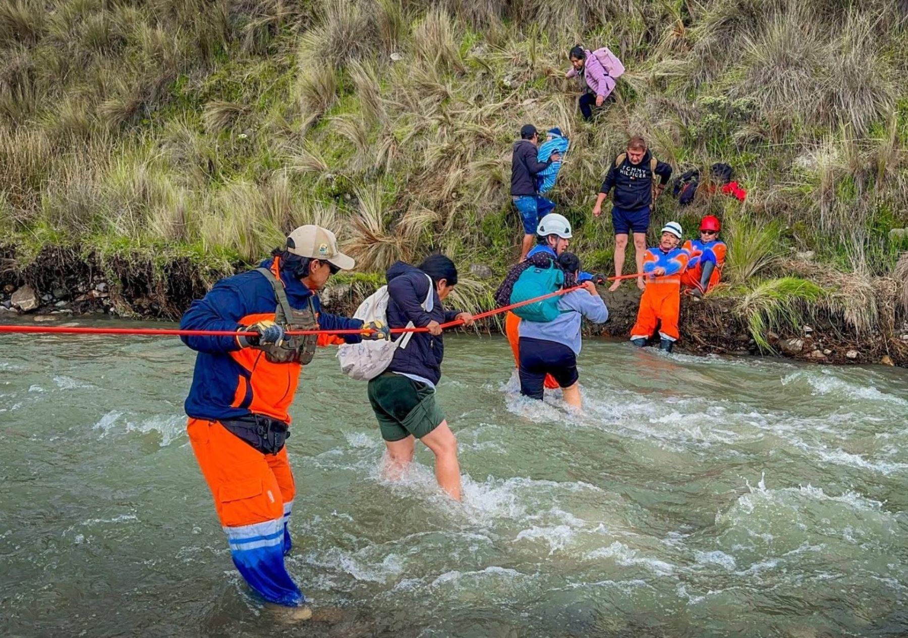

Ante la posible evolución de las condiciones climáticas globales, el Gobierno regional de Áncash ha emitido estimaciones técnicas preliminares que advierten sobre un escenario complejo. Según los reportes oficiales, más de 53 mil personas podrían resultar afectadas o damnificadas en toda la circunscripción regional como consecuencia directa de los impactos asociados al fenómeno El Niño.
Esta cifra pone de manifiesto la magnitud de los riesgos que enfrentan diversas provincias del departamento, tanto en el Callejón de Huaylas como en el Callejón de los Conchucos y la zona de la costa ancashina. Las autoridades locales y regionales mantienen un monitoreo constante de los puntos críticos para anticiparse a eventos extremos como huaicos, desbordes de ríos e intensas precipitaciones.
Dato clave: Más de 53,000 personas se encuentran contempladas dentro de las proyecciones de riesgo elaboradas por el Gobierno regional ante el fenómeno El Niño.
Coordinaciones y planes de contingencia
Frente a este panorama, las dependencias gubernamentales competentes se encuentran articulando esfuerzos para fortalecer la capacidad de respuesta de los gobiernos locales. La planificación incluye la identificación de rutas de evaluación, la habilitación de almacenes adelantados con bienes de ayuda humanitaria y la ejecución de trabajos de descolmatación en cauces de ríos y quebradas consideradas de alto riesgo.
Asimismo, se ha enfatizado en la importancia de la participación activa de la ciudadanía y de las plataformas de defensa civil en cada distrito. La preparación oportuna es considerada un factor fundamental para reducir la vulnerabilidad de las poblaciones asentadas en quebradas y laderas, minimizando así los daños materiales y salvaguardando la vida humana.
Monitoreo permanente y alertas
Las instituciones científicas y técnicas del Estado continúan evaluando la temperatura superficial del mar y otros indicadores oceanográficos y atmosféricos para determinar con mayor precisión la intensidad y duración de este evento climático. Con base en esta información científica, el Gobierno regional de Áncash actualizará de manera progresiva sus planes de contingencia y las proyecciones de población expuesta.
Se exhorta a la población a mantenerse informada a través de los canales oficiales y a seguir las recomendaciones emitidas por las oficinas de gestión del riesgo de desastres de sus respectivas municipalidades, con el fin de actuar de manera coordinada ante cualquier emergencia.